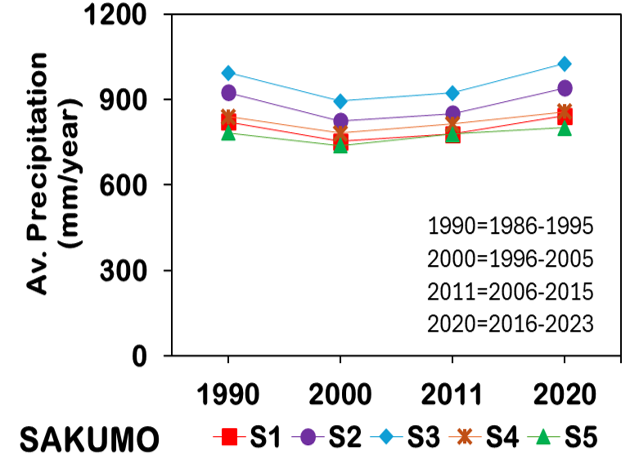
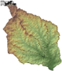
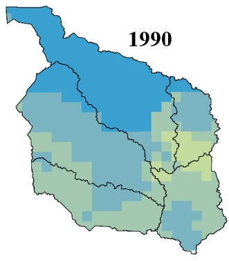
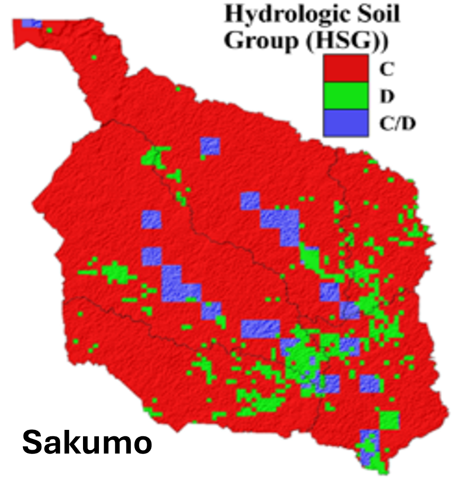

🌍 Sakumo Catchment: 30 Years of Change
Runoff & Pollution Trends • Remote Sensing • GIS Modelling
🔍 Project Snapshot
The Sakumo Ramsar Site, a wetland of global ecological importance, is fighting a slow battle against urbanization and pollution. This project combines three decades of satellite imagery, GIS analysis, and hydrological modelling to quantify how rapid land use change has altered the catchment's hydrology and increased nutrient pollution, threatening a vital ecosystem.
🏙️ Urban Growth
+44.7%
💧 Runoff Increase
+110.3 mm/yr
🧪 Total Nitrogen
+0.22 kg/yr
🧪 Total Phosphorus
+0.34 kg/yr
📌 Key Objectives
🛠 Methodology in Action
The project employed a systematic approach, combining remote sensing data with GIS modeling. Key datasets included:
LULC Change Maps for 1990, 2000, 2011 and 2020 (produced from Landsat imagery).

Animation showing the LULC maps of the Sakumo catchment for 1990, 2000, 2011 and 2020.
Precipitation Trends (from CHIRPS)
Temporal precipitation trends across Sakumo sub-catchments.
Topography (from SRTM) for hydrological modelling.
SRTM DEM of Sakumo catchment (low-res version).
GlobPOP population density (checked against census data).
Sakumo catchment population density distribution maps for 1990, 2000, 2011 and 2020.
FAO HYSOGs250m Soil Data
Hydrologic Soil Groups distribution in the Sakumo catchment (FAO-HYSOGs250m).
💡 Key Insights

Spatial distribution of geneated Total Nitrogen in the Sakumo catchment for 1990, 2000, 2011 and 2020.
Spatial distribution of generated Total Phosphorus in the Sakumo catchment for 1990, 2000, 2011 and 2020.
Spatial distribution of generated Total Phosphorus in the Sakumo catchment for 1990, 2000, 2011 and 2020.
Temporal distribution of generated runoff in the Sakumo catchment.
Temporal distribution of generated pollutants (TN-left; TP-right) in the Sakumo catchment.
Historical temporal trend of water quality in the Sakumo Ramsar site.
Current study temporal trend of water quality in the Sakumo Ramsar site.
🌱 Why It Matters
🔧 Future Directions